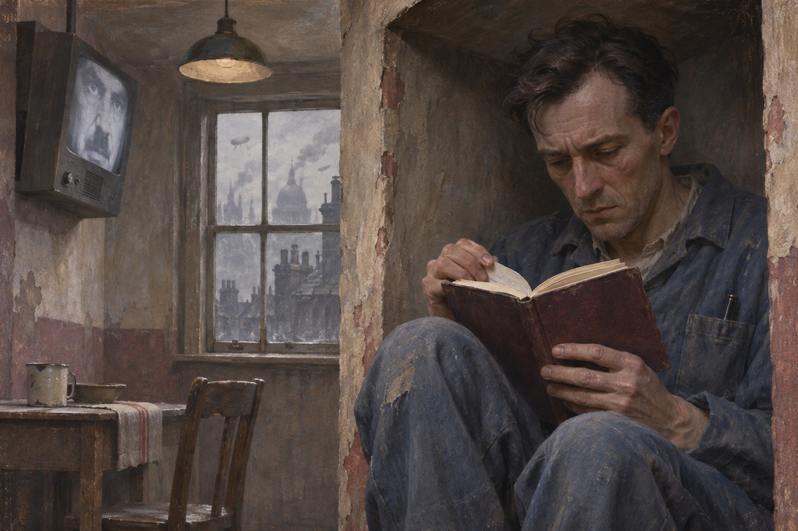
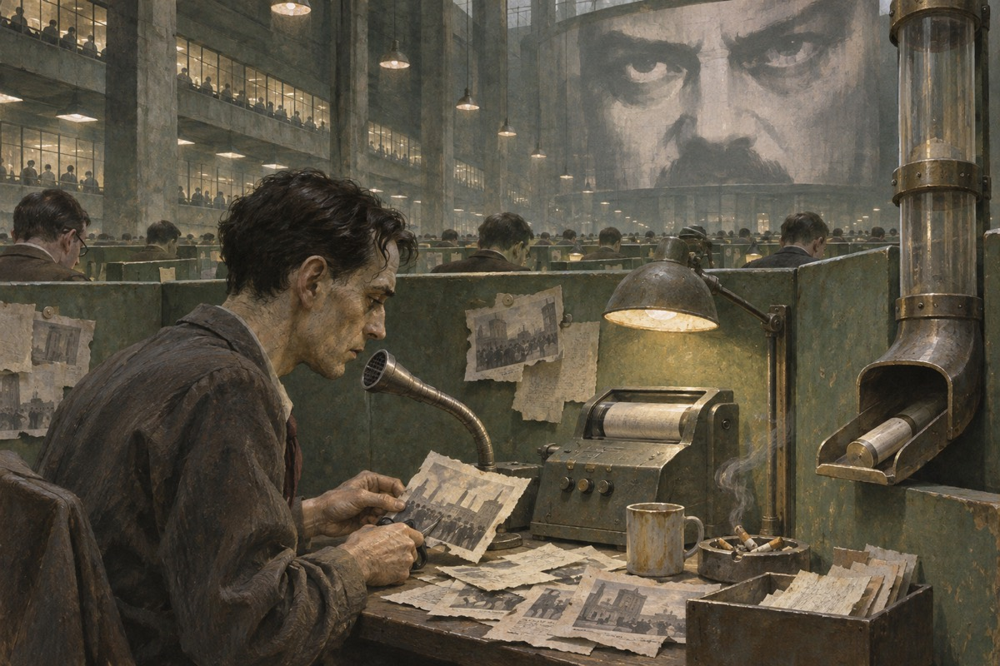
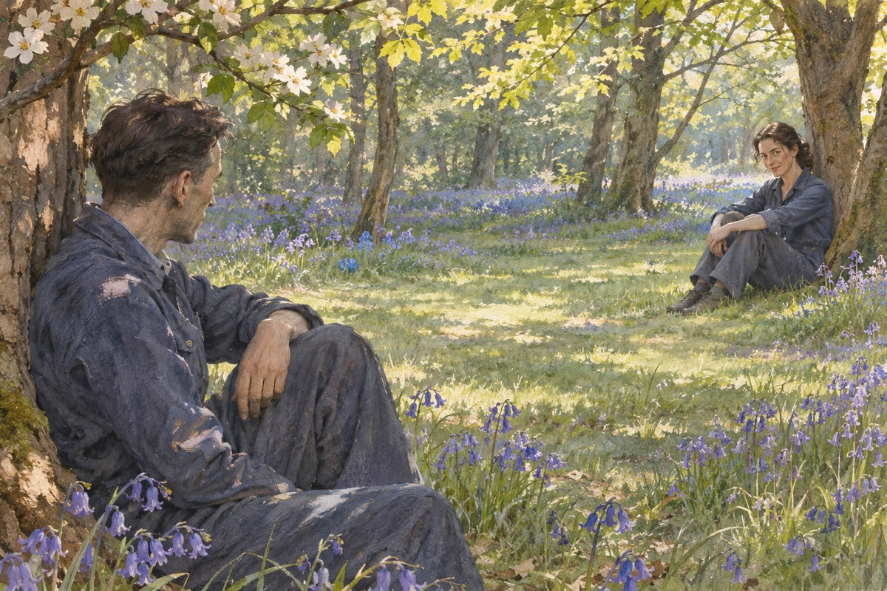
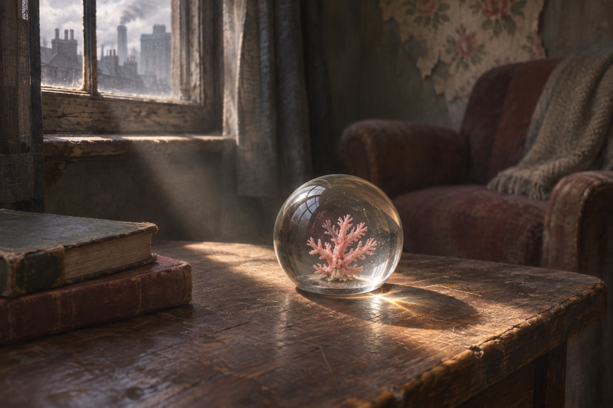
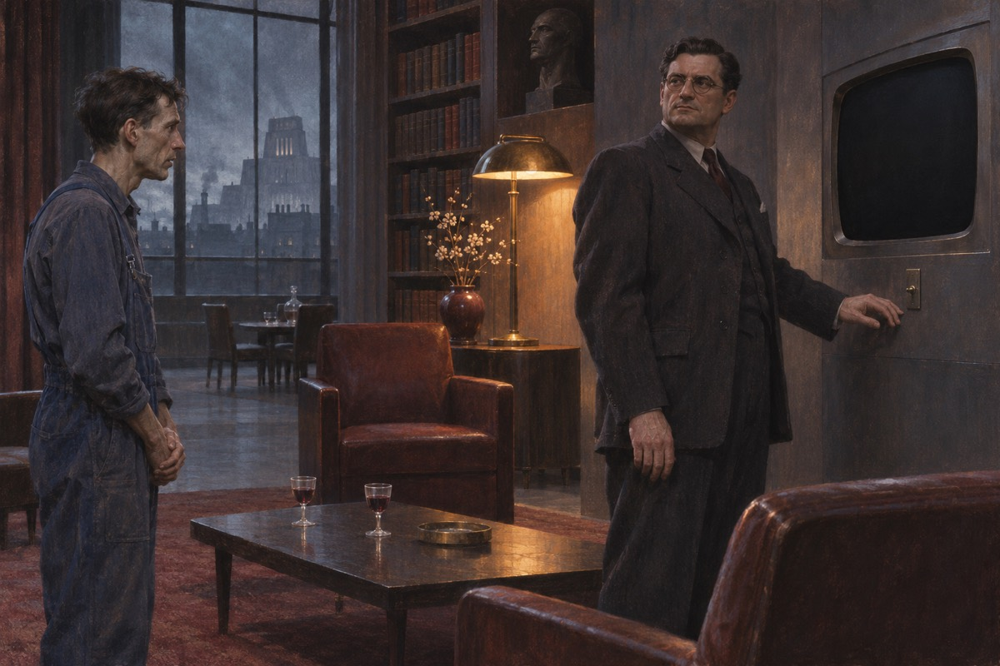
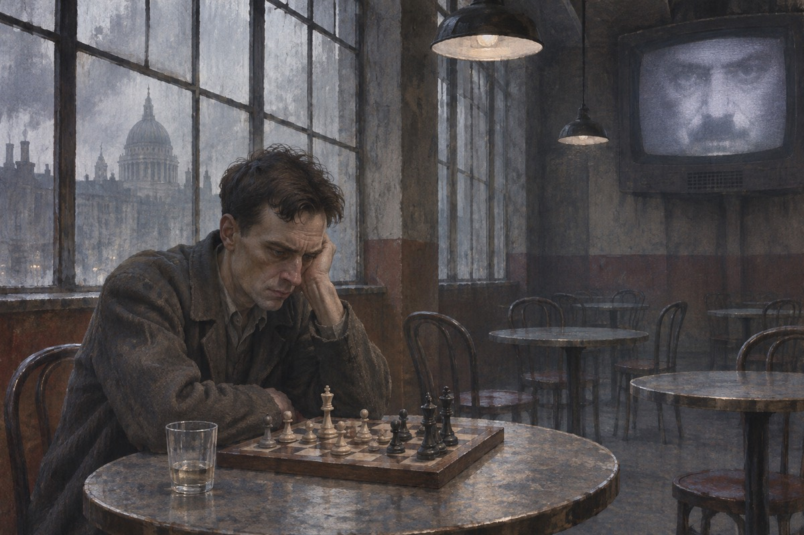

日记
温斯顿·史密斯三十九岁，在真理部做事，右踝上有一块静脉曲张的疮。他回到公寓，把桌子搬到墙角，因为电幕看不见那个角度。他拿出一个本子，一支笔，写下一行字：1984 年 4 月 4 日。然后他停下，不知道下一句该写什么。他妻子凯瑟琳两年前走了，走的时候说：你没有孩子，是因为你不够努力。他最后写的是：打倒老大哥。写完他盯着那四个字看了很久，手在抖。他知道这行字如果被发现，他会被枪毙，或者更糟。他把它留在本子上，没有撕。

电幕
每间屋子都有一块电幕，装在墙上，能看能听，不能关。街上到处是海报，画着一张黑胡子的脸，下面写着：老大哥在看着你。温斯顿每天上班、下班、吃饭、睡觉，都在那张脸底下。他说：这张脸画得不对，眼睛不看你。楼下的邻居帕森斯有两个孩子，天天拿着玩具枪喊抓叛徒。他有一次在楼梯口站住，看见那张海报的眼睛正对着他。他说：我知道你在看。他说完，自己笑了一下，说：我疯了。
改报纸
他在真理部记录司工作，每天的任务是改旧报纸。党说今年的棉花产量是多少，去年的报纸就得改成多少。改完的报纸投入火炉，原件销毁。他做这件事做了很多年，做得又快又好，还得过一次表扬。同屋的赛姆是个语文学家，正在编新话词典，他说：我们要把语言削到只剩骨头。走廊那头还有诗人安普福斯，他后来消失了。他有一句口头禅：这是技术活。他说：改得看不出痕迹，才叫本事。他后来想，我这一辈子，就是在一张一张地擦掉过去。

两分钟仇恨
每天上午十一点，所有人停下手里的活，看电幕上的两分钟仇恨。屏幕上出现果尔德施坦因的脸，一个叛徒，一个敌人。屋子里的人开始喊，开始扔东西。温斯顿也跟着喊，可他喊的时候，心里有一小块地方是冷的。他注意到奥勃良也在喊，喊得比谁都响。他想：这个人跟我一样，是在演。他后来知道，奥勃良不是在演。他扔了一个杯子，砸在电幕上，屏幕闪了一下，又亮了。他坐下的时候，看见自己的手在抖。他想：我恨的不是那个人，我恨的是那个让我必须喊的东西。
茱莉亚
他注意到一个黑头发的姑娘，在小说司做事，腰上系着一条鲜红的腰带。他一开始恨她，觉得她是党的密探。后来他发现她一直在看他。有一次她在走廊上摔倒，他扶了她一把，她塞给他一张纸条。纸条上写：我爱你。他把纸条读了三遍，然后烧了。他想：这是圈套。他又想：如果这不是圈套呢。他在厕所的隔间里站了很久，心跳得像打鼓。她把纸条递得很自然，像在递一张文件。他接过来的时候，两只手碰了一下。她说：别回头。他说：好。他说完，转身走了，走出去二十步才敢摸那张纸。
第一次
他们约在乡下的树林里见面。她穿了一件工作服，头发用一条红绳子扎着。她说：我带了一块巧克力，黑市的。他说：你怎么弄到的。她说：我换的。她说：我这个人，很会换东西。他们在一棵树下躺着，草很高，看不见路。她说：你看起来比我想的瘦。他说：你看起来比我想的年轻。她说：我二十六。他说：我三十九。她说：我知道。她说：你这个人，看起来像四十岁。他说：我三十九。她说：我看到你的时候，你总是低着头。他说：我怕人。她说：你怕的不是人，是电视。

玻璃镇纸
他们在查林顿先生的店里租了一间小屋，在楼上，没有电幕。温斯顿买了一个玻璃镇纸，里面有一小块珊瑚。他说：这东西没用。她说：没用才好。他把镇纸放在桌上，光透过玻璃，在墙上留下一个彩色的圆。他说：这是我从旧时代买来的东西。她说：旧时代有什么好。他说：有一样好，那时候的东西不会说话。她笑了，说：你这个人，想得真多。查林顿说：这间屋子，我三十年前也租给人。他问：那人后来呢。查林顿说：他搬走了。他说这句话的时候，眼睛看着别处。他后来才知道，那个人被抓了。

老鼠
她说她怕老鼠。他说他也怕。她说：那你怕什么。他说：我怕的是别的东西。他说：有一种笼子，里面装着老鼠，戴在脸上。他说完，自己打了个寒战。她说：别说了。他说：好。那天晚上他做了一个梦，梦见母亲抱着他的妹妹，坐在一条船上，船一直往下沉。他醒来的时候，脸上有眼泪。他说：我想起来了，我抢过我妹妹的面包。他母亲的脸他记不清了，只记得她的手。他妹妹的手很小，抓着他的袖子。他说：我抢过她的面包。他说：我那时候八岁。茱莉亚说：你是被饿的。他说：我知道。
兄弟会
他去找奥勃良，说要加入兄弟会。奥勃良给他倒了一杯酒，说：你要做好准备，可能一辈子都在做无用的事，可能被抓，可能死。他说：我知道。奥勃良说：你愿意吗。他说：愿意。奥勃良说：我们会联系你。他说完，关掉了电幕。那是温斯顿第一次看见电幕被关掉。他心里松了一口气，又紧了一下。奥勃良说：我们会让你读那本书。他说：那本书存在吗。奥勃良说：存在。他说：那本书里写的是什么。奥勃良说：写的是你现在已经知道的东西。

黄金乡
他们最后一次在小屋里待了一个下午。她睡着了，他坐在窗边，看着外面的雨。他想：如果现在被抓住，我也不后悔。他想：我已经活了三十九年，这几个月是最好的。他低头看她的脸，忽然觉得很难过。他说：我们以后不能再来了。她说：我知道。她说：那我们今天多待一会儿。他说：好。他把窗关上，外面的雨声变小了。他说：我想过，如果有一天我们被抓，我希望是在这个屋子里。她说：为什么。他说：因为这儿没有电幕。她说：他们不需要电幕，他们只要有人告密。
被捕
警察冲进来的时候，他还在穿衣服。查林顿先生站在门口，摘掉了假发，露出一张年轻的脸。原来他是思想警察。温斯顿说：你在这儿住了几十年。他说：我在这儿等了你们七年。他们被带走的时候，他看见那个玻璃镇纸被摔在地上，碎了。他想：那是我买的。他后来在牢里常常想起那块珊瑚。他被按在地上的时候，脸贴着地板，闻见一股旧木头的味道。他想：这地板上过我买的镇纸。他被人拉起来，看见查林顿正把假发收进抽屉，动作很仔细。
牢房
仁爱部没有窗，灯一直亮着，分不清白天黑夜。他被关在一间小牢房里，隔壁有人被打。他数着鞭子的声音，数到三十几下，那人就不叫了。他想：我也会这样。他坐在角落里，把膝盖抱在胸前。他后来被提审了很多次。审他的人不打他，只跟他说话，问他问题，让他自己想。他说：你们要什么。那人说：我们要你爱老大哥。他说：我做不到。那人说：你会做到的。他问隔壁那人为什么被抓。那人说：因为我在梦里骂了一句。他说：做梦也犯法。那人说：做梦也犯法。他说：那我完了。他这一辈子天天做梦。
奥勃良
审他的人是奥勃良。他说：你也是兄弟会的人。奥勃良说：我从来不是。他说：那本书是你写的。奥勃良说：是我们写的。他说：为什么。奥勃良说：因为我们要知道你们能走多远。奥勃良说：你不明白，权力不是手段，权力是目的。他说：我们不是为了别人，我们是为了权力本身。他说：你想象一下，一个人踩在另一张脸上，那张脸永远不变。奥勃良说：你以为我们是少数，你错了，我们是一群人，一代人。他说：你们能撑多久。奥勃良说：只要人类还怕死、还怕疼，我们就能撑下去。
镜子
他被带到一间屋子里，看见一面镜子。镜子里的人瘦得不像人，头发掉了大半，牙齿掉了两颗。他不认识那个人。他说：那不是我。奥勃良说：那是你。他说：我变成了什么。奥勃良说：你变成了真实。他哭了一场。他这一辈子很少哭。他哭完说：你们赢了。奥勃良说：还没有。他说：还有什么。奥勃良说：还有一步。镜子里那个人看着他，眼睛是空的。他想起自己三十岁的时候，站在同一面镜子前，脸上还有一点笑。他说：你们把我的脸也拿走了。奥勃良说：脸不重要。
老鼠
101 房间里，每个人都会遇见自己最怕的东西。奥勃良说：你最怕的是老鼠。他说：不是。奥勃良说：是。他让人拿来一个铁笼子，里面全是老鼠，笼子前面有一块面罩。他说：这个面罩会扣在你脸上。他喊：不要！他喊：去找茱莉亚！他喊：我对她做什么都行，别对我这样！笼子被拿走了。他躺在地上，浑身是汗。他后来说：那一刻我知道，我完了。笼子里的老鼠挤在一起，发出很小的声音。他听见自己的心跳。他说：还有一个办法。奥勃良说：什么办法。他说：你让茱莉亚来，让老鼠咬她。他说完，自己吐了。
出处 · 第三部第 5 章
出卖
他后来才知道，茱莉亚也说了同样的话。他们说：去找温斯顿，对他做什么都行。他们两个人在不同的房间里，做了同一个选择。他们后来见过一次，在公园里，两个人都很瘦。她说：我出卖了你。他说：我也出卖了你。她说：从今以后，我们不要再见了。他说：好。她说：我恨你。他说：我也恨你。他们说完，各自走开。走了十几步，两个人都没有回头。她说：你现在还喜欢我吗。他说：不喜欢了。她说：我也不喜欢你了。他们两个人都笑了一下。她说：这样也好。他说：是。他们站起来，各走各的路。
栗树咖啡馆
他被放出来了。他有了一个清闲的职位，一份够吃的口粮，一间干净的屋子。他每天下午去栗树咖啡馆，喝一杯胜利咖啡，下一盘棋。电幕里播着前线的胜利消息，他听着，觉得很安心。他有时候会想起那间小屋，想起玻璃镇纸，想起她的头发。他想起的时候，心里没有难过，只有一点模糊的痒。他想：那不是真的。他就不想了。他下棋赢了三次。他以前最喜欢下棋，现在下得像在做工。他看着棋盘，忽然想不起来自己为什么喜欢过。他把棋子摆回原位，说：再来一盘。
出处 · 第三部第 6 章

两分钟仇恨
那天电幕上又出现了果尔德施坦因的脸。屋子里的人开始喊。他也站起来，跟着喊。他喊的时候，眼泪流下来。他喊：老大哥！他喊：把他杀了！他喊得嗓子都哑了。喊完他坐下来，手还在抖。他想：我终于做到了。他想：我爱老大哥。他抬起头，看见墙上那张黑胡子的脸，觉得那张脸很慈祥。他知道自己在哭，可他不知道为什么哭。他想：这是真的。他想：我终于感觉到真的东西了。他把手按在胸口，觉得那儿很热。
赢了
他坐在那里，想起很多年前在小屋里说过的一句话：如果我能爱他，我就自由了。他想：我现在爱他了。他想：我战胜了自己。他闭上眼睛，觉得有一阵暖流从心里升起来。他睁开眼，看见电幕上的那张脸。他想：一切都好。他想：一切都很好。他把咖啡喝完，把杯子放回桌上，杯底有一个褐色的圈。他想起奥勃良说过的一句话：我们会在你心里挖一个洞。他想：你们挖了。他想：可我现在不疼了。他抬起头，看见天花板上有一盏灯，灯光很白。
他爱老大哥
他在咖啡馆里坐着，面前是一杯胜利咖啡。电幕上在播前线的消息，他听着，觉得很安心。他想起那间小屋、那个玻璃镇纸、那个姑娘，心里没有难过，只有一点模糊的痒。他闭上眼睛，觉得有一阵暖流从心里升起来。小说最后一句是：他战胜了自己。他热爱老大哥。
出处 · 全书末句